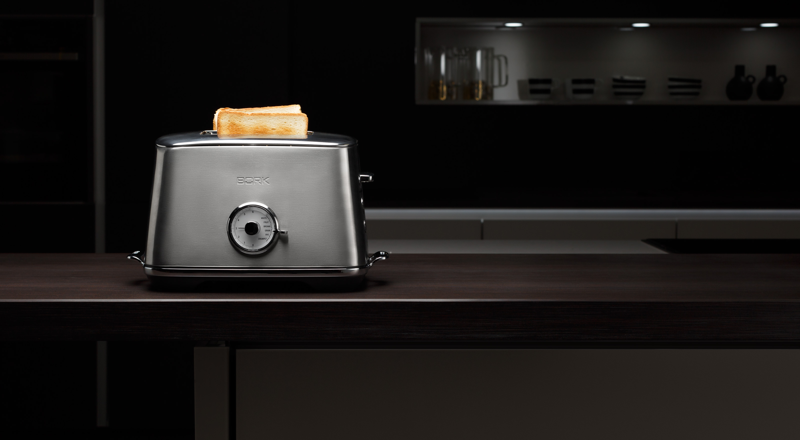
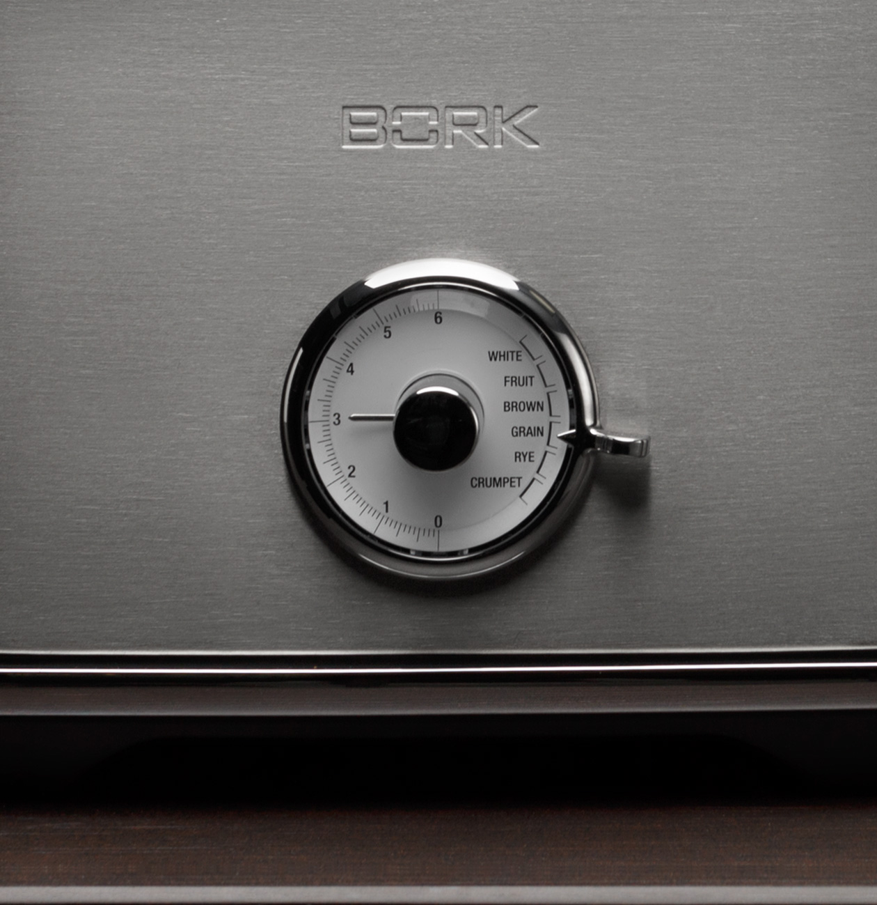
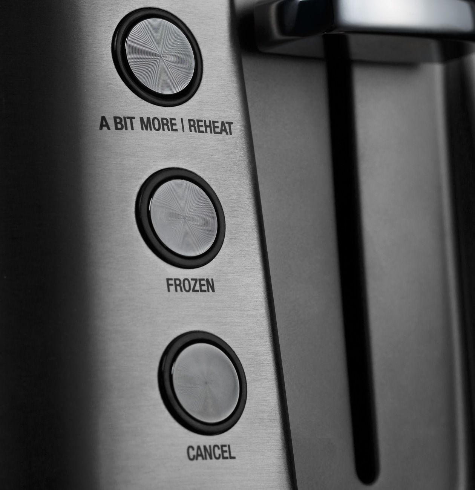
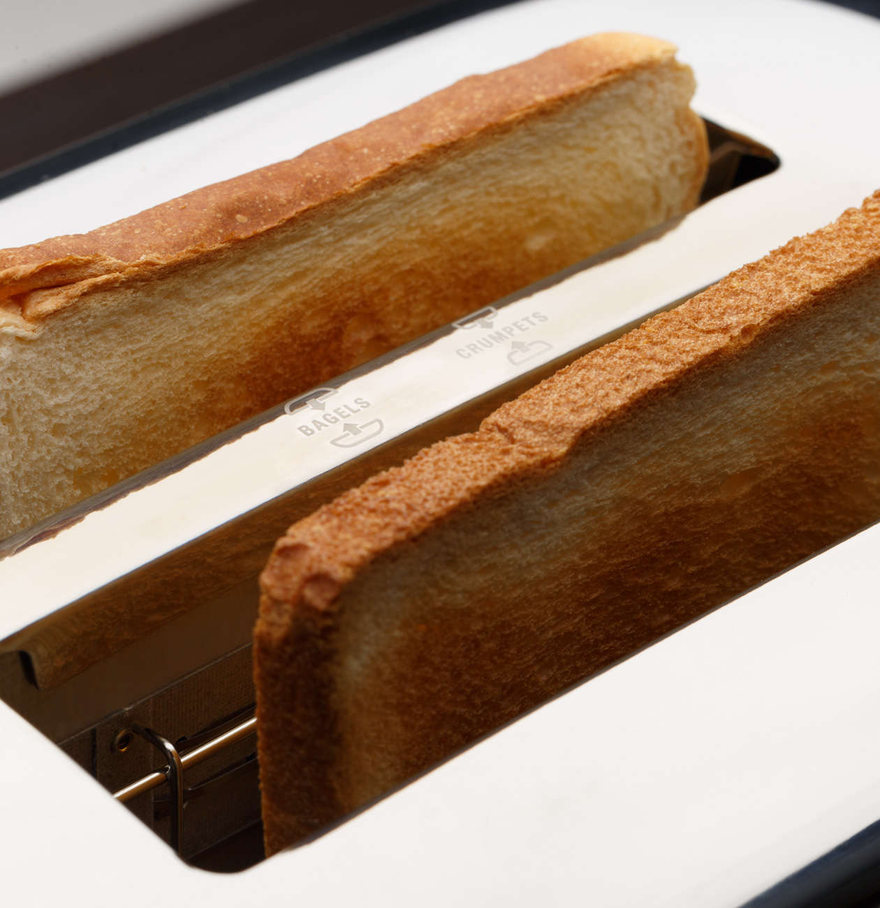
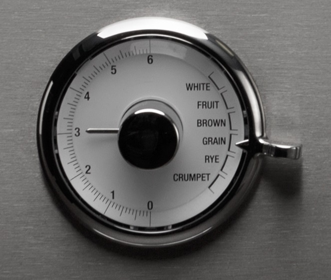
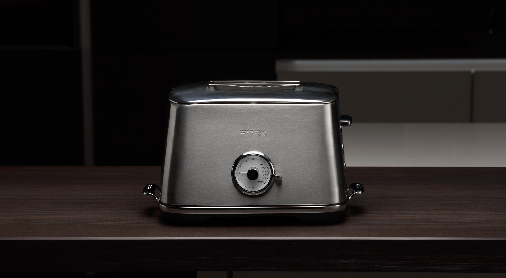

Тостер T703
Элегантный помощник в стиле ретро для приготовления горячих завтраков.
Настройка под тип хлеба
Выберите требуемый тип хлеба, и тостер автоматически подберет оптимальное время приготовления для каждой степени поджаривания.
- White – белый хлеб
- Fruit – фруктовый хлеб
- Brown – коричневый хлеб
- Grain – зерновой хлеб
- Rye – ржаной хлеб
6 степеней поджаривания тостов
С помощью регулятора вы можете выбрать подходящую степень поджаривания тостов от 1 до 6. Удобная панель управления идеально дополняет ретро-дизайн стильного прибора.
Функция одностороннего обжаривания тостов — CRUMPET
Благодаря функции CRUMPET тосты сильнее поджариваются с одной стороны. Теперь хлебные ломтики могут быть нежными и хрустящими одновременно.
Функция быстрого дожаривания тостов — A BIT MORE/REHEAT
С помощью функции A BIT MORE/REHEAT вы можете неоднократно дожарить тосты до желаемого состояния или разогреть готовые.
Функция разморозки и обжаривания замороженного хлеба — FROZEN
Теперь для тостов можно использовать замороженный хлеб. Тостер сначала размораживает хлебные ломтики, а затем автоматически переключается в режим поджаривания. С каждым днём растёт количество людей замораживающих хлеб. Этому способствует 2 основные причины: 1) Хлеб значительно дольше хранится; 2) Это делает хлеб более полезным. Ведь замораживая, а затем подсушивая хлеб в тостере, мы преобразуем углеводы с высоким гликемическим индексом в углеводы с низким гликемическим индексом. А они в свою очередь преобразуются в энергию равномерно, и мы успеваем ее потратить. В результате в организме не откладывается жир.
Функция контроля готовности тостов — LIFT&LOOK
Функция LIFT&LOOK дает возможность контролировать степень поджаривания тостов во время выполнения заданной программы, не прерывая и не отменяя при этом процесс приготовления. Поднимите рычаг включения процесса приготовления и оцените готовность тостов. Для дальнейшего поджаривания просто опустите рычаг
Индикация времени
Тостер отображает обратный отсчет времени на дисплее, выполненном в ретро стиле.
Технические характеристики

Мощность 840-1000 Вт
Число степеней поджаривания 6
Вес 2,4 кг
Материал корпуса Нержав. сталь
Срок гарантии 1 год
Автоцентрирование Есть
Контроль готовности Есть
Дисплей Есть
Поддон для крошек Съемный
Страна производства Китай